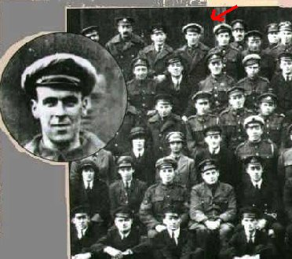

As we humans evolved we expanded our knowledge of our world but seeking answers to our never ending
questioning. Are we alone, what happens when we die? But for every question answered 10 more take its place.
One such question is if there is such a thing as a spirit. Our understanding of the paranormal is vague.
As human being we know that death is a part of us that we cannot escape. But what happens after we die?
Many believe that death is just our next journey. Groups around the US have dedicated their life to
finding proof of the paranormal. They use special devices that allows them to detect what they believe
are spirits. Of course this is debatable. When someone hears a voice in a recorder others hear static.
However, there have been recordings and pictures and have left people baffled. I took an interest in
this phenomenon. I decided to do my own investigation to see if I would receive a message from the
other side. To my surprise, I did capture anomalies that are remarkable.
Professional paranormal investigations are no longer a taboo aspiration in our society. There are numerous
television shows that follow locations where un explained occurrences have occurred. It is a fact that the
evidence to support spirits is overwhelming. Unfortunately scientist do not condone the existence of such
entities because the occurrences of such are unpredictable therefore un measurable. However, That doesn’t stop
people from investigating. I’m one of those people. But there are groups are there that are determined as well
as well funded. Here are a few.
throughout the world, people have claimed to have seen and heard ghosts. Most of these locations
always end up being very old places with a traumatic past. On some occasions, even new houses can
have spirits. What most experts in the field say its that spirits are entities
of pure energy, and the older a location the more easier it is for them, the spirits, to break
through to our world. they claimed that it has something to do with the magnetic field around the
earth. The theory is that they can sometimes manipulate this field to make a manifestation through
our reality. this is pure speculation, but there has been some amazing evidence that proves this
theory. most ghost hunters today are equipped with several devices to detect spirits
or anomalies. some are immensely complex, others are common and inexpensive. it all depends
on your level of funding.
EVP Recorder
Can record sounds the human ear cannot pick up.
Infrared Camera
This type of camera can pick up different types of lights no seeable by the us.
Spirit Box
This device is actually an fm am radio except it can switch between stations every .02
seconds. the idea is that a spirit can use the white noice to communicate.
Mel Meter
This device is quite unique. For some reason, there has been sufficient evidence to
support that when a spirit is in close proximity, it affects the electromagnetic
field in the area. This device signals you when that field is desrupted. I’ve tested this
device myself and I can honestly tell you that it works.
Gallery
Here are some of the most compelling images captured by Paranormal Investigators
This image was taken two days after these men lost a friend in a battle. Yet to
their suprise he made an appearance at their units photoshoot.
This image is actually the first apparition ever caught on camera.
The next two images are some of the once I have captured. I promise it won't dissapoint you.
This photo was actually taken by myself. I took it to a professional and it does not
show evidence of a camera error.
This photograph is what I believe to be my holy grail of paranormal. At first I
thought this is a camera error, but then I took a closer look and discovered something
incredible. If it was a camera fluke, or a bug flying close to the lens, it wouldn’t have
casted a shadow. Take a good look at it. The anomaly is actually casting a shadow on the ground.
And by the size of the shadow you can see clearly that it was away from the camera a good
two feet.
Audio File
This is a very compelling piece of evidence captured by me. if you listen closely, you can hear the
spirit of a man whispering mama. I promise that this is not a prank or some sort of error. i
was completely alone when i got this voice. And if analyzed on a professional audio program like Adobe
Audition, you can clearly see that the frequency of the voce is not in that of the capability of human
hearing


{kind=link}